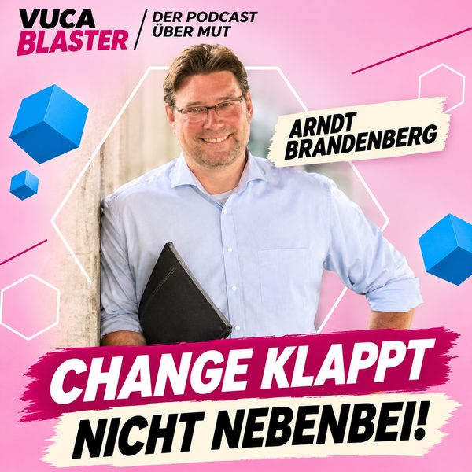

#70
Warum Change nicht an Menschen scheitert
Warum verpuffen Change-Programme trotz guter Absichten und hohem Einsatz?
· 67 Min.
mit Arndt Brandenberg
- verbindend · Hauptwert
Diese Folge hören
Dort hilft jedes Abo und jede Bewertung dem Podcast.
Worum es geht
Warum verpuffen Change-Programme trotz guter Absichten und hohem Einsatz?
Mit Dr. Arndt Brandenberg sprechen wir darüber, wie Strukturen, Prozesse, Führung und unausgesprochene Annahmen gemeinsam Verhalten prägen – und warum Veränderung deshalb mehr braucht als ein neues Organigramm oder Kulturprogramm.
In dieser Folge geht es darum,
warum Reorganisationen allein Verhalten oft nicht nachhaltig verändern,
weshalb Führung selbst Teil des Veränderungsprozesses sein muss,
warum Change Zeit, Ressourcen und echtes Lernen braucht,
wie regelmäßiges Messen, Lernen und Verbessern Veränderung in kleinen Schritten ermöglicht,
und weshalb Klarheit, Vertrauen und ein gemeinsamer Nordstern wichtig sind.
Außerdem sprechen wir darüber, warum Menschen in unveränderten Systemen oft ähnliche Verhaltensmuster übernehmen – und was sich verändert, wenn sie sich selbst als Teil des Wandels verstehen.
Welche Rahmenbedingungen müsste eure Organisation verändern, damit neues Verhalten im Alltag möglich wird?
Transkript lesen
Automatisch erstellt. Fremdwörter, Fachbegriffe und Namen können falsch erkannt sein.
0:04 VUCA Blaster. Ja, herzlich willkommen zu einer neuen Folge des VUCA Blasters. Und ja, Glück auf. Heute mal nicht aus dem Pod, sondern wieder in Düsseldorf aus dem Library Lab Studio, im Podcast Studio. Und jetzt haben wir ausnahmsweise mal die Mikros vorher getestet und mein Mikro funktioniert leider nur links auf dem linken Ohr. Ich hoffe mal, das stört mich bei dieser Folge. Aber auch wie beim letzten Mal, genau, ist eigentlich am wichtigsten. dass wir den Gast bei uns hören. Und dieser Gast heute ist Arndt Brandenberg. Er ist Experte für Transformationsmanagement und Change. Er ist Dozent am INIKO-Institut der Uni Köln. Da ich da meine Ausbildung mache, habe ich darüber auch ihn kennengelernt. Er ist Managing Director und Gründer von The Trusted Advisors GmbH. Die machen relativ viel Kultur-Change, soweit ich das gesehen habe. Er war lange Zeit in Energiekonzernen, Er war in verschiedenen Bereichen tätig, auch am Ende, glaube ich, im Change und zwischenzeitlich auch im Controlling. Dann, er ist Doktor der Philosophie und, was ich ganz interessant fand, er war zehn Jahre, ich kann gerade meine Schrift nicht so ganz lesen, aber im Fußball unterwegs als Schiedsrichter, soweit ich das erwähnt habe. Ja, also nur in der höchsten Amateurspielklasse. Ich durfte halt im Profibereich so ein paar Freundschaftsspiele leiten. Das war auch so die Motivation, einmal pro Jahr vor 10.000 Leuten auflaufen zu dürfen, das war schon super, hat schon Spaß gemacht. Aber nein, ich bin da oben nie offiziell rumgelaufen. Immer nur unten drunter.
1:54 Und da hast du wahrscheinlich auch einiges gelernt, oder geht das? Da habe ich extrem viel gelernt, ehrlich gesagt. Extrem viel darüber auch, was es bedeutet, berechenbar zu sein für Menschen, die auf dem Platz sind, Regeln zu befolgen, Regeln auszusetzen. Regeln zu erklären und mit Menschen umzugehen. Und ich glaube, das ist etwas gewesen, was mich sehr geprägt hat, mein Leben lang. Also Berechenbarkeit einfach. Dass man so beim Ahnen so ein bisschen weiß, woran man ist. Naja, ob das so ist, schauen wir jetzt gleich mal. Habe ich sonst noch was vergessen, was dir noch wichtig ist bei der Vorstellung? Vielleicht nur noch zwei Ergänzungen. Das eine ist, ich bin Essener Kind, also komme aus dem Ruhrgebiet, 48 Jahre, verwitwet, zwei Söhne. Und für den Hobbys ja neben Fußball, wofür ich berenne halt, nebenbei noch ist es Rock und Tart, Rockmusik und Motorradfahren. Ah, cool. Wir haben sonst immer noch so verschiedene Check-in-Fragen. Ja, das verkaut es mir schon. Mal durchmischen. Ein paar hatten wir schon. Ich probiere mal, ob ich eine finde, die wir vielleicht im letzten Fall noch nicht hatten. Welche Aufgabe oder Rolle gibt dir gerade eine Möglichkeit zu wachsen oder zu lernen? Bevor ich die Frage beantworte, ganz kurz, ich liebe das immer. Also das ist so das, was ich am schlechtesten kann, wenn die Fragen kommen. Wenn du eine Farbe wärst, welche wäre es? Wenn du ein Tier wärst, was wäre es? Welche Aufgabe, welche Rolle gibt mir momentan die Chancen zu wachsen, die Rolle des Vaters jeden Tag?
3:20 Also da kann ich auch eines zu sagen. Also ich habe mal irgendwann gedacht, nach über zehn Jahren Change-Erfahrung, ich müsste das, was ich im Change gelernt habe, mal zu Hause ausprobieren. Vergiss es. Das funktioniert nicht. Klappt überhaupt nicht. Den Ansatz finde ich aber gut. Ja, wie gesagt, Prototyping hat nicht funktioniert. Okay. Aber darum geht es ja auch. Einmal zu testen und wieder zu verwerfen, wenn man merkt, es funktioniert nicht. Genau. Also deswegen, ich habe viel lernen dürfen, was nicht funktioniert und was ich deswegen auch dann besser nicht mehr mache. Okay. Die zweite Check-In-Frage ist, oder nicht unbedingt ein Satz eher, den du vervollständigen sollst. Wenn meine derzeitige Situation verfilmt werden würde, wäre der Titel... Da ist sie wieder. Die berühmte Frage, wo ich keinen blassen Schimmer habe, was ich darauf antworten würde. Wenn meine derzeitige Situation verfilmt würde. Also jetzt gerade ganz aktuell wäre das in der Tat VUCA. Denn warum? Weil es einfach, wie du gerade gesagt hast, total erstaunlich war für mich, dieses Studio hier zu sehen, die Professionalität hier zu sehen und dann festzustellen, dass es nicht funktioniert. Danke. Aber hey, wir werden das Beste draus machen. Insofern freue ich mich drauf. Aber extra gemacht, weil ja der Podcast heißt ja VUCA Blaster.
4:40 Ja klar. Und das letzte Check-In-Frage ist eine gute Frage, die ich zuletzt gehört habe. Eine gute Frage, die ich zuletzt gehört habe. Fällt mir gerade nicht so an. Okay. Und zwar nicht, weil es so wenig sind, sondern weil es viele, viele gute Fragen waren, die ich gehört habe. Kannst du nicht entscheiden, oder? Nein. Okay. Ja, dann wollen wir mal in das Thema Change einsteigen. Also du hast ja super viel Erfahrung. Du hast auch einen ganzen Konzern begleitet im Change-Bereich. Was hast du vielleicht daraus gelernt? Oder was waren vielleicht auch so Learnings daraus, was du genau teilen könntest als Einstieg? Oder ist das zu hart am Anfang? Nee, das ist super. Die Frage ist, wie viel Zeit wir haben für den Podcast. Ja, also ich hatte halt die große Freude, einen großen DAX 30, ein DAX 30 Unternehmen zu begleiten. Zu begleiten ist vielleicht ein bisschen untertrieben. Ich darf sagen, im Prinzip habe ich ja fast neun Jahre lang halt die gesamte Change-Reise organisiert und gemacht und auch geleitet. Und deswegen stolz oder eben auch halt sozusagen mit, es tut mir sehr leid an diejenigen, die heute noch da drin sind, aber viel der Kultur geht halt auf mich zurück. Das habe ich verbrochen sozusagen.
5:58 Ja, was habe ich gelernt? Also ganz platt gesagt, eigentlich vier Dinge. Und die vier Dinge im Prinzip halt basierend auf ganz, ganz vielen Fehlern, die ich gemacht habe, die wir alle gemacht haben auf dieser Reise. Und zwar, das erste, was ich gelernt habe, ist, es braucht, wann immer du Change machen willst, einen systemischen Ansatz. Ich kann nachher mal erklären, was ich darunter verstehe, was es heißt. Also du musst das System sehen, verstehen, erkennen, die Ursachen verstehen und darauf basierend sozusagen halt die richtige Lösung kreieren. Punkt Nummer eins. Punkt Nummer zwei ist, es braucht Führung. Und zwar, ich bringe mal gern das Beispiel Führung, die nicht nur, ich bin Fußballfan oder Fußballschiedsrichter, also stell dir vor, wir sind im Stadion, das Spiel läuft, wir brauchen nicht Führung, die auf der Tribüne sitzt und zuguckt. Wir brauchen Führung auf dem Spielfeld. Die müssen unten sein, ganz nah dran, die müssen es mit vormachen, die müssen es sozusagen halt mitgestalten. Also Führung oder im Englischen get skin in the game. Ja, also du musst mit dabei sein, du musst brennen dafür. Das dritte ist, es braucht Ressourcen. Das vergessen viele. Ja, also dann kommt irgendwie so, ja, wir sind ja klug und wir haben ja auch was drauf und wir brauchen das, machen das so nebenbei. Nein, nein, es klappt nicht nebenbei. Es braucht Ressourcen, es braucht Zeit, es braucht Lernen. Das Erlernen von neuen Fähigkeiten, von neuen Verhaltensweisen. Und dann last but not least ist es Impact beziehungsweise Messung.
7:19 Wir müssen messen, was hinten rauskommt. Also es braucht irgendwie Klarheit darüber, ja, was wollen wir eigentlich erreichen und woran erkennen wir, dass wir es geschafft haben. Nur bei Messungen kann ich quasi Kontakt mit der Realität herstellen und darüber sehen, wo ich wirklich bin. Das sind für mich eigentlich so die vier größten Lernfelder. Also es braucht Führung, also Leadership. Es braucht einen systemischen Ansatz, also einen Approach. Es braucht Ressourcen. Und dann sozusagen braucht es hinten raus eben auch die Messung des Impacts. Und wenn diese vier Elemente sozusagen vorhanden sind, wenn ich Klarheit darüber habe, ehrlich gesagt, dann kann ich einfach nur zurufen, dann wird Change funktionieren. Aber es braucht alle vier. Wenn eins davon fehlt, ist der kommunierte Impact nachhaltig null. Das geht auch in allen möglichen Größen von Unternehmen. Also du hattest natürlich jetzt einen Konzern. Ist egal. Ja, also das für mich faszinierende ist, also erstmal, also wir haben das so die LARI-Formel genannt. Ja, also weil im Prinzip halt du hast Leadership, ja, dann sozusagen mal Ansatz, Approach, mal Ressourcen ist dann gleich Impact. Und wie gesagt, wenn halt eins von den ersten dreien fehlt, hast du gar keinen Impact. Und das für mich faszinierende ist, wir haben das halt auf die harte Weise lernen müssen in über 100 Transformationen mit Einheiten, mit Einheiten, die mehrere tausend Leute groß waren, mit Einheiten, die zum Teil nur 15, 20 Leute groß waren. Über 100 Transformationen halt in diesem einen großen Unternehmen mit nachher 45.000 Mitarbeitern.
8:39 In der Zwischenzeit habe ich es übertragen auf Unternehmen mit 30.000, da bin ich gerade unterwegs bei einem Unternehmen. Mit 5.000 bin ich gerade unterwegs, mit 2.500 bin ich gerade unterwegs. Und wie soll ich sagen, die sind noch nicht durch. Aber ich sehe die Richtung und ich sehe die Erfolge. Und ich sehe auch, dass man sich in die richtige Richtung bewegt. Und das stimmt mir sehr zuversichtlich. Also ganz breit gesagt, wenn das bei 100 Transformationen klappen sollte. Und entschuldige bitte, also vor euch sitzt ein gelernter BWLer. Vor euch sitzt jemand, der hat Controlling gemacht. Der war früher Unternehmensberater. Der hat Organisationen gemacht und Strukturen gemacht und Strategien entwickelt. Ich war irgendwann mal CFO im ungarischen Geschäft. Also so einer sitzt vor euch. Wenn ich das hinkriege, kann das jeder. Jeder. Das ist kein Hexenwerk. Change ist möglich. Ja, das ist eine gute Vorlage, weil ich habe, also hier ist Tamara Wyszynski. Ich bin heute die zweite Gastgeberin dieses Podcasts. Und ja, ich bin sehr, sehr gespannt tatsächlich auf die heutige Folge, weil ich bei GE mich ja auch mit dem Thema Kultur viel beschäftigt habe, als ich ja relativ ungeplant eine große Graswurzelbewegung dort losgetreten und geleitet habe. Und ich hatte mir natürlich in Vorbereitung auf unser heutiges Gespräch auch dein LinkedIn-Profil mal angeschaut und genau diese Historie gesehen.
10:01 Du hast sehr viel erstmal im Bereich Beratung, Controlling, viel mit Zahlen, nehme ich an, gearbeitet. Und ich habe in deiner Ausbildung jetzt gar nicht so ein Zertifikat zum Thema Change Management oder sowas gesehen. Und auf Anheber habe ich mich natürlich gefragt, wie kam es, dass du von einer Rolle als CFO in einer Einheit in Ungarn für dieses riesengroße und ja auch wirklich sehr, sehr bedeutungsvolle Projekt eingesetzt wurdest. Also wie kam dieser Wandel? Das finde ich unglaublich spannend. Und zweite Frage dazu. Was würdest du sagen, waren deine persönlichen Erfolgsfaktoren an der Stelle? Schiedsrichter oder kommt noch was anderes dazu? Jetzt beginnen wir mit der ersten Frage. Also ich glaube, es ist sozusagen kein Bruch gewesen, sondern es ist eher das gewesen und da beginne ich mal ganz kurz bei den Schiedsrichtern. Ich hatte ein ganz tolles Erlebnis und zwar, ich glaube, da war ich 16 Jahre alt. Und ich war in einer Schiedsrichtergemeinschaft, die war im Prinzip ein Spiegelbild der Gesellschaft. Wir hatten promovierte Menschen mit dabei, Rechtsanwälte, wir hatten sozusagen halt die bürgerliche Mitte dabei, wir hatten Leute halt eher, die, wollte man's Harz nennen, sozusagen halt, die arbeitslos gewesen sind.
11:23 Und wir hatten eben auch zum Beispiel Menschen, die geistig benachteiligt waren. Und was ich faszinierend fand, war, wenn man diese Menschen, und ich war es nicht, der es geschafft hat, das war halt eine andere Person, die ich sehr bewundert habe damals, wenn man diese Menschen richtig führt, konnten die Unfassbares leisten. Unfassbares, was ihnen sonst keiner zugetraut hat. Also ihr seht hier gerade, mir stehen die Haare zu Berge, weil ich daran denke, das ist jetzt ernst, ja, also kann ich nicht steuern. Es war unfassbar, was diese Menschen auf dem Platz geschafft haben. Und die waren sonst in der Gesellschaft abgeschrieben, mit denen wollte keiner was zu tun, die standen am Rande. Und das hat mich fasziniert. Ich habe mir die Frage gestellt, wie kann ich es hinkriegen, dass Menschen glücklich sein können, dass sie glücklich viel leisten können auf der Arbeit. Wie kann ich den Rahmen dafür schaffen, dass Menschen, sagt man so schön, at their very best, also so performen können, wie es wirklich möglich wäre für sie. Das war der erste große Augenöffner. Und das hat mich halt im Studium dazu gebracht, mich ganz stark zu beschäftigen, auch mit was treibt Menschen an, also mit Motivationstheorien. Ich habe mir das geschrieben zum Thema Motivationstheorien und Anreizsysteme. Also das war ein ganz zentrales Thema für mich. Was kreiert Motivation in Menschen? Und dann gab es ein drittes großes Erlebnis. Und das war, ich habe damals als Berater bei McKinsey gearbeitet und weltweit Lean-Programme implementiert. Und bei Lean habe ich dann diese Markenschumente erlebt. Diese Magie, die kommt, wenn man Menschen diese Ketten abreißt.
12:42 Die Ketten, die sie behindern. Die Ketten, die sie dazu zwingen, jeden Tag das Gleiche zu machen. Und plötzlich dürfen die. Und die dürfen das machen, von denen sie seit 20 Jahren wissen, was eigentlich richtig ist und was nötig ist. Und die machen das. Und es geht voran. Und die haben das Leuchten in den Augen, weil sie plötzlich sehen, wie toll es vorangeht. Und das werde ich nie vergessen. Das war für mich eine Riesenmotivation. So ein bisschen so, das will ich überall haben. Und das war für mich von da an der Punkt, ich wollte diese Philosophie, dieses Ketten abreißen und den Menschen das ermöglichen, was wirklich machbar ist, überall ermöglichen. Und dann kam ich ins Controlling in einem großen Konzern und sagte, wo ist denn hier Lean eigentlich? Da kam die erste große Antwort, Arndt, das wirst du nie verstehen. Aber weißt du, Lean ist nichts für die Energiewirtschaft. Für andere Industrien, ja, aber nicht in der Energiewirtschaft. Das verstehst du später. Aber das wird hier nie kommen, okay? Drei Jahre später, nächster Anlauf in Sachen Lean, die Argumentation verschwand schon ein wenig. Da hieß dann, Arndt, das wirst du nicht verstehen, aber Lean ist was für die Produktion. Du bist im Controlling oder hier im Finanzbereich, das wird hier nie kommen. Hat hier gar keine Relevanz. Und du denkst so, verdammte Access hat aber Relevanz. Und dann war ich in Ungarn. Und ratet, was kam, ja, Herr Brandenberg, Lean, das ist so japanisches Zeugs. Das ist überall relevant, aber nicht in Ungarn, wir sind anders. Und da hat es gereicht.
14:00 Und da habe ich angefangen, Ungarn war das erste Land, was ja auch im Zuge der Wirtschaftskrise 2008 bereits pleite gewesen ist. Es war nicht Griechenland, es war Ungarn, die gerettet worden sind als Erste. Und Ungarn ist ab 2010, als Viktor Orban gewählt worden ist, massiv sozusagen unter Druck geraten. Und im Prinzip muss man kompletten Change und kompletten Kulturwandel auch herbeiführen. Und das war meine Minute, wo mir klar geworden ist. So, und jetzt bremst mich nichts mehr, jetzt mache ich es in meinem Verantwortungsbereich. Und als dann zwei Jahre später im Prinzip halt das gesamte Großunternehmen in eine ähnliche Lage hineinkam, ja, da war das für mich wie so ein Spielfeld, wo ich mir dachte, unfassbar, du hast es ausprobiert im Kleinen. Du bist noch nicht durch, aber es hat funktioniert. Und als ich mich versah, habe ich mich dann im Büro des CEOs wiedergefunden, von dem ich den Eindruck hatte, dass er wirklich Kulturwandel will. Und habe ihn interviewt und er mich. Und habe ihm gesagt, wenn er das wirklich ernst meint, würde ich es gerne machen für ihn. Wow. So bin ich da hingekommen. Und wer hat dir die Türen dorthin geöffnet? Fairerweise muss ich jetzt eins dazu sagen, das ist eine private Geschichte, ganz stark meine Frau. Denn während meiner ungarischen Zeit hatten wir eine Fernbeziehung. Ich dachte damals, dass meine Familie mich begleiten würde nach Ungarn, aber da hatte ich mich dummerweise getäuscht, einer der größten Fehler meines Lebens. Und im Ergebnis meine Frau krank geworden, also eine Winterdepression.
15:19 Und deswegen war für mich vollkommen klar, Ende 2012 bin ich wieder zu Hause, egal ob für meinen damaligen Arbeitgeber oder ohne. Und insofern war ich sowieso auf der Suche nach was Neuem und dachte mir, wo erwartest du jetzt eigentlich? Mach doch das, worauf du Lust hast, was dir wirklich Spaß macht. Und das hat mir Spaß gemacht in Ungarn. Ehrlich gesagt, so klassische Finanzarbeit und CFO-Tätigkeit, wenn man die 47. Free Cashflow-Überleitung vom Forecast 1 zum Forecast 2 gemacht hat und dich wieder irgendwer fragt, was eigentlich ein Free Cashflow ist, irgendwann reicht's. Da ist mir so bewusst geworden, meine Energie ist nicht mehr im Finanzbereich. Ich will was Größeres bewegen. Also aus meiner Sicht, bitte ich, das soll jetzt nicht respektierlich klingen. Finanzen ist auch super wichtig. Also, aber ja, das war meine Motivation, die mich dahin geführt hat. Ja, ich würde sagen, die Begeisterung hört und sieht man dir gerade auch wieder total an. Und ich fand es sehr schön, dass du auch dieses Beispiel gebracht hast zum Thema ganz am Anfang bei deiner Einführung. Die Situation aus deiner Schiedsrichtertätigkeit. Du hast gesehen, zum einen, wie wichtig Führung ist und was Führung leisten kann, wenn sie gut ist. Und das Ergebnis, und das finde ich, passt halt auch wieder sehr gut zu unserem Podcast, dass Menschen, wenn sie die richtige Führung haben, richtig glücklich sind auf der Arbeit. Und das ist ja so der Inbegriff auch von New Work. Also das, wo viele ja hinkommen möchten und aktuell viele nicht unbedingt da sind.
16:54 Und du hattest vorhin auch das Thema schon High-Performing-Teams angesprochen. Das heißt, wenn Menschen glücklich sind, ist das automatisch dann aus deiner Erfahrung heraus auch eine Überleitung zu High-Performing-Teams? Oder wie misst du das dann genau? Boah, schwierige Fragen. Also ganz kurz eine empirische sozusagen Antwort darauf. Und zwar zunächst mal ist es so, es gab eine wunderbare Untersuchung. Ich glaube, von der Uni Zürich ist das gewesen. Aber ich mag mich da jetzt auch gerade irgendwie vertun. Irgendwie aus der Schweiz auf jeden Fall. Wo im Rahmen von Glücksforschung Produktivitäten ermittelt worden sind. Und da hat man festgestellt, dass sich Glück in der Tat auszahlt. Also für uns jetzt hier im Raum. Also wenn wir glücklich sind, dann würdest du beispielsweise zehn Jahre länger leben, als wenn du unglücklich wärst. Und Manuel, wir beide zumindest sieben Jahre. Also auch für Männer sind sieben Jahre auch nicht schlecht. Also das finde ich ist jetzt irgendwie aller Ehren wert. Und die nächste Frage ist natürlich, was hat das Unternehmen davon? Das Faszinierende war, was sie herausgefunden haben, war, dass glückliche Menschen 47 Prozent produktiver sind als Unglückliche. Wow, das ist eine Hausnummer. Das heißt also, wenn wir drei unglücklich sind und ich verlasse den Raum und ihr beide werdet glücklich, dann seid ihr beiden genauso produktiv, also schafft genauso viel, als wenn wir drei unglücklich sind.
18:19 Und das finde ich immer so Wahnsinn, wie viel Ressourcen, wie viel Lebenszeit verschwendet wird durch Unglück. Es gibt eine schöne Gell-Hub-Studie, die ist immer wieder sehr frustrierend, wo auch für Europa, und ehrlich gesagt, die Ergebnisse von Nordamerika sind vergleichbar, immer herausgefahren wird, wie viele Menschen prozentual eigentlich wirklich engagiert sind im Unternehmen. Und ich meine, die letzten Zahlen waren, 14 Prozent sind wirklich richtig engagiert. Ich meine, so um die 66 Prozent wären es gewesen, die sind neutral, also offiziell nennt man das disengaged, das finde ich jetzt immer so schwierig, aber die Dienst nach Vorschrift und der ganze Rest, die sind actively disengaged. Actively disengaged heißt, die machen was anderes, die schaden teilweise sogar dem Unternehmen. Das heißt, der Durchschnittsmensch, der ist disengaged. Wie grausam, wie fürchterlich. Also das, um erstmal die Frage zu beantworten, warum ich fest daran glaube, dass Glück auch zu ihrer Plutivität führt. Sorgt es notwendigerweise dafür, sich High-Performing werden? Nein, nein, nein, um Gottes Willen. Jetzt sind wir sozusagen im richtigen Change mit drin. Und da gibt es halt ganz, ganz viele Elemente, die relevant sind. Ich möchte gerne beginnen mit dem ersten Punkt. Und zwar mit dem Punkt, über den Ansatz zu sprechen. Über eine systemische Perspektive im Ansatz. Und zwar, lass mich da eine kurze Geschichte erzählen. Das Unternehmen, für das ich dort gearbeitet habe, das DAX 30 Unternehmen, ich habe dort angefangen und dann wurde eine große Dezentralisierung durchgeführt. Das war 2005. Große Dezentralisierung.
19:49 2008 wurde dann eine Zentralisierung durchgeführt. 2010 folgte auf diese Zentralisierung eine Dezentralisierung. 2012, als dann auf Fukushima kam und klar war, der Laden muss sich komplett neu erfinden, ratet, was die Lösung sein sollte. Hey, wir brauchen eine Zentralisierung. Und das Faszinierende ist, und jedes Mal waren die Argumente dieselben. Es hieß, wenn wir uns jetzt reorganisieren, vollkommen egal, ob Zentralisierung oder Dezentralisierung, wir werden noch schneller, wir werden noch kundenorientierter, wir werden noch besser. Es gibt nur Vorteile. Und die Realität war, es hat sich eigentlich nichts geändert. Wir haben Leute genommen, die haben ihre Sachen gepackt im Büro, die sind rausgegangen in einen Umzugswagen, sind an einen neuen Platz gefahren, sind da ausgestiegen, haben ihr Equipment ausgepackt, haben ein neues Namenschild bekommen, ein neues Firmenschild bekommen und haben genauso weit gemacht wie vorher. Warum erzähle ich das? Weil wenn es halt darum geht, High Performing zu werden, dann sind ganz, ganz viele klassische Ansätze immer, wir brauchen eine Reorganisation, wir brauchen Process Re-Engineering oder ähnliches. Und in der Realität scheitern 70 Prozent von solchen großen Vorhaben. Sie zeigen keine nachhaltige Wirkung. Das ist ja spannend. Das heißt, die Frage ist, warum ist das eigentlich so?
21:10 Wo hackt denn das wirklich? Warum ist das nicht erfolgreich? Und dahinter liegt ganz oft, dass wir dieses Verständnis haben, dass ein Unternehmen eine Maschine ist, die perfekt geölte Maschine. Ja, die Maschine muss geplant werden. Deswegen mache ich Forecasts, ich mache Midterm-Plans. Ich überlege mir genau Human-Ressourcen, spannender Begriff. Die Ressource, wo ist die Ressource am besten einzusetzen in der Maschine? Also im Prinzip halt, wir haben noch immer ganz oft dieses Menschenbild. Ja, Tayloristisch geprägt. Andere, Lalou nennen das Orange, das Orange-System. Es gibt viele Begriffe dafür, aber eigentlich ein Unternehmen ist eine perfekt geölte Maschine. In der Lean-Welt, ja, da wird davon gesprochen, wie kann ich dafür Sorge tragen, Fehler rauszunehmen, Störungen zu vermeiden, dass die Maschine sauber laufen kann. Und wenn ich dann ein Change machen will, ja, dann stoppe ich die Maschine, dann schraube ich die auf und dann fummel ich innen drin rum und baue ein paar Teile um, nehme ein paar Menschen raus, die ich nicht mehr brauche, baue die wieder zusammen und drücke dann Startknopf und dann läuft die super. Die Realität ist, nein, Unternehmen sind keine Maschinen, sondern Unternehmen sind Systeme. Und wenn ich verstehen will, was in einem System nicht funktioniert, dann muss ich zunächst einmal hingehen und das System analysieren. Das ist für mich halt der ganz, ganz große Schritt eigentlich, den wir gegangen sind, den ich lernen durfte, lernen musste, den harten Weg. Das ist halt der klassische Weg. Ja, du designst etwas und alles ist perfekt und dann sagst du den Leuten so und jetzt laufen wir da lang und machen das.
22:33 Klappt halt nicht. Also eine Anekdote dabei, werde ich nie vergessen. Wir haben natürlich anfangs in der System mit dieser Maschinendenke begonnen. Und dann war klar, wie die künftige Kultur aussehen sollte, die hatten wir designt. Und dann war die große Frage, ja, dein Punkt von vorhin, wie kriegen wir jetzt eigentlich das Unternehmen dazu, das auch zu leben. Und dann hatte eine Person im Vorstand die brillante Idee und sagte, das ist ganz einfach, schreiben wir eine Richtlinie, schreiben wir das alles rein, dann wird die verkündet und dann jagen wir die interne Revision hinterher zum Kontrollieren. Ja, die anderen im Vorstand waren da relativ still. Und dann sagte ein Kollege, bin mir nicht ganz sicher, ob das der richtige Ansatz ist. Ja, soll also heißen, man muss das System vorher verstehen, man muss es analysieren, man muss die Ursachen verstehen, ja, warum die Probleme vorhanden sind. Erst dann darauf aufbauen kann ich etwas verändern, zum Besseren hin. Ich möchte jetzt Marni nicht die ganzen Fragen klauen. Mir stellt sich dennoch gerade die Frage, wie bist du oder wie seid ihr auf diesen systemischen Ansatz gekommen? Weil ich habe bei dir jetzt auch keine Ausbildung zum systemischen Coach gesehen. Also da ist ja häufig dann auch so diese Denkweise, die sich ändert im Rahmen dieser Ausbildung, die Haltung, die damit einhergeht. Wo kam dein oder euer Verständnis für das Systemische her? Ja. Also wie gesagt, ich habe alles mir hart über Fehler erarbeiten müssen.
23:58 Meine erste Aktion ist gewesen, das war das Jahr 2012. Und wir haben gesehen, wir haben die Kultur gemessen und haben an der gemessenen Kultur festgestellt, wie schlecht sie war. Es gibt ja mittlerweile halt wunderbare empirische Belege. Also Peter Drucker, der ja eigentlich Österreicher war und Peter Drucker heißt, aber Peter Drucker, wie er bekannt geworden ist, hat diesen wunderbaren Spruch geprägt. Culture eats strategy for breakfast. Und mittlerweile ist ja empirisch alles belegt durch mannigfaltigste Studien. Das heißt, es gibt die direkte Beziehung zwischen der Qualität der Kultur und der nachhaltigen Performance eines Unternehmens. Und wir haben Kultur gemessen. Kultur würde ich immer messbar machen, um zu wissen, wo ich stehe. Und auch Benchmarken, um zu sehen, wo ich stehe. Und das Ergebnis war 2012, dass wir, Entschuldigung, schlecht sind. Das war ein Unternehmen einer Kultur, die so nicht mehr überlebensfähig ist. Und was macht man dann? Und in der alten Denkweise war jetzt die Philosophie, wir brauchen jetzt Führung. Also haben wir die Top 300 zusammengetrommelt. Ja, weil die Intelligenz sitzt ja oben. Denkt man zumindest oftmals. Und trommelt diese 300 Leute zusammen und brainstormt jetzt über Ideen und Maßnahmen, was wir machen können. Das war super, werde ich nie vergessen. Und dann kam ich nach zwei Tagen total begeistert nach Hause und dachte, was für ein tolles Unternehmen, was für tolle Leute. Hunderte von Ideen, Hunderte von Maßnahmen, die wir machen müssen.
25:18 Toll! Und dann sitzt du zu Hause in deinem Büro und dann packst du die ganzen Sachen nochmal aus und clusterst und guckst und hast die Ideen in der Hand und guckst da drauf und denkst so, das ist jetzt nicht neu. Hat irgendwie noch nie funktioniert. Warum sollte es jetzt funktionieren? Und das war wie so ein Stoppschild, was hochging. Was mir sagte, dein alter Ansatz, der funktioniert nicht. Du brauchst ganz was anderes. Was geht hier eigentlich gerade vor sich? Und dann habe ich mit ganz vielen Unternehmen gesprochen, die schon Change gemacht hatten. Und ich bin sehr dankbar, damals in Richtung von Shell, mag man heute gar nicht glauben, oder auch von Glexus Smith Klein, also JSK. Und ich habe mit den ehemaligen Change-Teams oder aktuellen Change-Teams von beiden Unternehmen einen sehintensiven Austausch gepflegt. Und beide hatten mir unison die Kernfrage gestellt, habt ihr euer Problem überhaupt verstanden? Ich meinte, wie meint ihr das? Und worauf die hinaus wollten, war im Prinzip über den Eisberg nachzudenken. Also Eisberg heißt, wenn du eine Kultur siehst und diagnostizierst, die du heute hast, dann ist das sozusagen die Spitze des Eisbergs, das ist das, was du sehen kannst, oberhalb der Wasseroberfläche. Und wenn du verstehen willst, was das treibt, dann musst du weiter unten runter. Du musst im Prinzip über fünfmal warum oder auch zehnmal warum den Eisberg abtauchen um zu verstehen, welche Prozesse treiben eigentlich das Verhalten.
26:38 Und warum sind die Prozesse so, wie sie sind? Ja, aufgrund von Strukturen. Wow, interessant. Warum sind die Strukturen so, wie sie sind? Und so bohrt man sich immer weiter runter, bis man irgendwann auf der Ebene angelangt ist, eines sogenannten mentalen Modelles einer Grundüberzeugung. Und mentale Modelle sind unheimlich wichtig. Wir können auch sagen Glaubenssätze, Narrative, sind ganz entscheidend. Weil auf diesen Narrativen alles unsichtbare Strukturen, Prozesse und das sichtbare Verhalten aufbauen. Und wenn ich sichtbares Verhalten sehe, verstärkt ist das mentale Muster unten drunter. Also im positiven Beispiel, Procter & Gamble sagt irgendwie sinngemäß, ich kriege es nicht genau hin, aber sinngemäß, customer first, also wir machen alles, Kundenzentrierung ist für uns das Herzstück von allem. Das ist ein Grund, den er glauben. Das machen alles für den Kunden. Und im Ergebnis sind Strukturen aufgebaut, die den Kunden in den Mittelpunkt drücken, Prozesse aufgebaut. Wenn man dort als Trainee anfängt, dann, ob man es will oder nicht, sieht man jeden Tag den Kunden. Das heißt, quasi in die Prozesse reingewoben, das mentale Muster, customer first. Und so verstärken sich mentale Muster und dann eben Strukturen, Prozesse und Verhaltensweisen. Das Problem ist halt jetzt, es gibt manchmal mentale Muster, die Veränderungen behindern, die sie blockieren. Und wenn ich das nicht rauskriege, wenn ich das nicht identifiziere, was das ist, dann laufe ich Gefahr, dass ich Veränderungen nicht wirklich werde leben können. Ich bleibe quasi in dem alten mentalen Muster gefangen.
28:04 Das heißt, ich muss erst rausfahren, was blockiert uns eigentlich wirklich innerhalb unserer Kultur? Was sind die unausgesprochenen, blockierenden mentalen Muster im Unternehmen? Aber ist das nicht auch von Mitarbeiter zu Mitarbeiter unterschiedlich, welche mentalen Muster die Personen haben? Kann man das überhaupt so pauschalisieren auf die ganz große Unternehmen? Ja, lass mich dir ein Beispiel erzählen. Und zwar folgendes Bild. Stellt euch vor, wir haben hier einen Käfig und da sind zehn Affen drin. In der Mitte des Käfigs steht eine Leiter und obendrauf liegt eine Staule Bananen. So, was passiert? Was passiert? Die laufen da hoch. Die rennen da hin? Na klar, logisch. Jeder Affe will die Banane haben. Also zack, sprinten die los. In der Sekunde, wo der erste Affe die unterste Sprosse betritt, stehe ich draußen mit einem Feuerwehrschlauch. Also mit einem richtig dicken Schlauch. Ich dreh den voll auf, der hat Power. Und ich spritze alle Affen nass. Die kugeln sich, die rollen sich, die fragen sich, was denn hier passiert? Also richtig druckt so einen Feuerwehrschlauch. Und wenn die wieder anfangen loszulaufen, stehe ich wieder da, wenn der erste Affe halt die unterste Sprosse betritt und spritzt sie wieder alle nass. Das Spiel mache ich zehnmal, zwanzigmal, dreißigmal, bis alle Affen verstanden haben, erstens, ich darf nicht zur Leiter rennen und oder zweitens, wenn ein anderer Affe loslaufen will, halte ich ihn fest.
29:31 Denn ich möchte nicht mehr nass werden. Ich habe die Nase voll von diesem Feuerwehrschlauch. Ich will das nicht. Wenn die jetzt alle in Ruhe da sitzen, mache ich die Tür auf, nehme einen Affen raus und nehme einen neuen Affen, der das nicht gesehen hat, rein in den Käfig. So was passiert. Der neue Affe sagt sich, super, da ist eine Banane. Und die anderen neun, sind die doof, die sehen das nicht und rennt los. Und was passiert? Er wird sofort festgehalten und fragt sich, was ist jetzt los? Wartet, die lassen ihn los, rennt wieder los, wird er festgehalten. Das Spiel wiederholt sich, bis dieser Affe verstanden hat, ich darf nicht zur Banane hinrennen und wenn jemand da hinrennt, muss ich ihn festhalten. Und dann tausche ich den nächsten Affen aus und bringe neun Affen an. Das Spiel wiederholt sich. Das Spiel wiederholt sich so lange, bis nachher alle Affen ausgetauscht sind. Am Ende des Tages habe ich dort zehn Affen. Die haben alle gelernt, ich darf nicht zur Banane rennen und wenn ein anderer Affe dahin rennt, muss ich ihn festhalten. Haben die alle gelernt und keiner weiß warum. Und das ist ein System. Das ist ein System, von dem wir alle Teil werden, was auf jeden von uns wirkt. Und die schlechte Nachricht, ihr könnt es euch vorstellen, lautet natürlich, die Affen sind wir. Wir sind die Affen im Unternehmen, wir sind die Affen in der Familie, mit meinen Jungs.
30:56 Wie gesagt, Change klappt da nicht. Nach welchen Regeln spielen wir eigentlich überhaupt? Was sind unsere Glaubenssätze ganz tief unten drunter? Woher kommen die eigentlich? Wie prägt sich in meiner Familie das Verhalten, was ich gelernt habe von meinen Eltern, von meinen Großeltern? Und dass mir das bewusst ist, aber ich lebe es weiter. Und so sind wir überall in jedem System Affen im Käfig. Und deswegen die Frage zu beantworten. Sorry, das ist eine lange Geschichte dahinter. Deswegen ist es halt so wichtig zu verstehen, das was dort in der Organisation drin ist, wirkt auf jedes Team und wirkt über das Team auf jeden Menschen. Deswegen, wenn ich oftmals so Sätze höre, ich weiß, dir ist zum Beispiel ganz wichtig, das Thema Führung auch. Und dann höre ich ganz oft, ja, Führung, ganz schlimm bei uns, Katastrophe. Wie willst du hier Führung, wie willst du Change machen mit dem Team, die musst du alle austauschen. Und die Wahrheit lautet, nein, denn wenn du den ersten Austausch in den neuen reinbringst, der wird genauso zum Affen wie die bisherigen. Du musst das System verändern. Und man darf eben nicht persönlich werden im Sinne von, ja, das ist der Arndt, der ist halt doof, der kann nicht anders, der will nicht. Nein, das System ist halt so. Das muss ich anerkennen. Ich darf, ich muss weggehen, abstrahieren von den Menschen und sozusagen deren, in Anführungszeichen, Bösartigkeit oder ähnlichem das systemisch betrachten. Und deswegen leider die schlechte Nachricht, das wirkt auch immer halt auf mich persönlich. Und das wird wahrscheinlich dann auch länger dauern, dass wieder, also man hat das ja über eine längere Zeit wahrscheinlich gelernt und auch immer weitergegeben. Und es dauert wahrscheinlich genauso lange, um wieder neue, was Neues zu lernen.
32:23 Weil ich glaube irgendwie sonst ist immer Change Management, soll wahrscheinlich am besten Fall immer von heute auf morgen kommen. Kann man irgendwie sagen, wie lange sowas dann wieder dauert? Kommt natürlich auf die Größe des Unternehmens wahrscheinlich. Ja, total. Also in diesem einen Unternehmen haben wir insgesamt für 45.000 Leute sieben Jahre gebraucht, um alles zu durchdringen, um alle hinzukriegen. Aber ich würde gerne ein bisschen die Frage abstufen in ein paar Teile. Also der erste Punkt war ja, du hast gefragt halt, was es mit dem Menschen selbst macht. Also erst einmal, ich habe eine ganz tolle Nachricht für euch. Und zwar, jetzt komme ich über Gehirnwissenschaften, Neurowissenschaften. Wir haben in unserem Gehirn einen Superrechner. Und dieser Superrechner, jeder von uns ist der präfrontale Kortex. Also hier vorne hinter dem Stirnlappen liegt der präfrontale Kortex. Das ist total genial, denn damit machen wir im Prinzip alles. Der präfrontale Kortex ist im Prinzip halt ja das Element, warum wir Menschen auch diese fantastischen Leistungen vollbringen können, die wir vollbringen. Super. Das Problem ist, der hat nur vier Stunden Power pro Tag. Vier Stunden. Wir können das vielleicht ein bisschen verlängern, ein paar Minuten mit ganz viel Zucker und ähnlichem oder Kaffee, den ich gerade trinke, aber am Ende des Tages vier Stunden. Nicht mehr. Was die spannende Frage schon aufwirft, machen wir eigentlich die anderen 20 Stunden. Aber das nur am Rande. So, und was macht unser Gehirn? Unser Gehirn macht Folgendes. Unser Gehirn automatisiert so viel wie nur eben möglich.
33:45 Das ist das sogenannte HEPP's Law von 1949. Also HEPP war ein Neurowissenschaftler, der gesagt hat, wir haben 86 Millionen Neuronen im Kopf. Auch da gibt es andere Zahlen, aber zumindest war das damals die Aussage. Und im Prinzip, wenn ich jetzt meinen Kaffeebecher zum Mund führe, wann immer ich das mache, verbinden sich im Prinzip Neuronen in meinem Kopf. Beim ersten Mal ist es halt ganz wackelig und da lerne ich das. Und die Neuronen verbinden sich zum ersten Mal. Je öfter ich das mache, desto öfter wird diese neuronale Verbindung gestärkt. Und irgendwann, und jetzt bin ich bei deiner Frage, wie viel Wiederholung braucht es dafür? Auch da scheiden sich die Geister. Es gibt Menschen, die sagen irgendwie 21 Wiederholungen reichen, andere sind irgendwie bei 90. Andere sagen, du brauchst ein halbes Jahr. Ich möchte nur so viel sagen, es braucht viel Zeit. Und ich würde auch sagen, dass meine Erfahrung ist sehr unterschiedlich, aber es braucht halt eine gewisse Zeit, bis es automatisiert ist. Und jetzt kommt halt genau der Punkt, nämlich die Frage, wie kriege ich jetzt eigentlich Menschen dazu, die alles automatisiert haben, etwas anders zu machen? Und da, ihr müsst mich stoppen, wenn ich jetzt zu viel erzähle, ja, denn mein Problem ist, ich spreche sehr gerne über diese Themen. Wir hören gerne zu. Okay, da habe ich eine Geschichte und dann würde ich die Frage gerne beantworten. Also, die Geschichte, die ich gerne erzählen möchte, ist die Geschichte des walisischen Mönchs. Also, angeblich, keine Ahnung, ob es den wirklich gegeben hat, aber es ist eine schöne Geschichte. Also, die lautet, vor 1000 Jahren lebte ein walisischer Mönch.
35:08 Und der erzählte, als ich ein junger Mann war, da wollte ich die Welt verändern. Aber ich konnte die Welt nicht verändern. Da wollte ich mein Land verändern, Wales. Aber auch mein Land konnte ich nicht verändern. Da wollte ich meine Stadt verändern, die Stadt, in der ich lebe. Und selbst meine Stadt konnte ich nicht verändern. Da wollte ich zumindest meine Familie verändern. Und heute, heute bin ich ein alter Mann. Und heute weiß ich, hätte ich mich verändert, hätte das vielleicht einen Einfluss gehabt auf meine Familie. Hätte sich meine Familie verändert, hätte das vielleicht einen Einfluss gehabt auf die Stadt, in der ich lebe. Hätte sich meine Stadt verändert und so weiter und so weiter. Also, Change starts with me. Der Wandel beginnt bei mir und bei keinem anderen. Jetzt mögen einige sagen, aber wie will ich denn überhaupt mit Unternehmen wandeln und ist das überhaupt eine gute Aussage? Ich meine, wir wollen doch jetzt irgendwie 40.000 Leute mitnehmen auf eine Reise. Wie mache ich denn das überhaupt? Dazu zunächst einmal, Change starts with me, hat eine unheimlich befreiende Aussage. All die Entschuldigungen der Vergangenheit fallen nämlich weg. Ich kann nicht, denn mein Vorgesetzter erlaubt das nicht. Echt? Dein Vorgesetzter erlaubt nicht, dass du dich anders verhältst? Ich kann das nicht. Meine Kollegen erlauben das nicht. Ich kann das nicht.
36:27 Mein Betriebsrat verbietet das. Ich kann das nicht. Meine Mitarbeiter, die würden da niemals mitziehen. Ich kann das nicht, weil... Alles Ausreden. Das sind alles Ausreden. Niemand, niemand kann mich davon abhalten, mein Verhalten zu ändern. Und wenn ich mein Verhalten ändere, darüber einen Einfluss zu haben auf mein Team und über mein Team auf die Organisation und über die Organisation vielleicht sogar hinausgehend auf die Welt. Niemand kann das verhindern. Change starts with me. All die Ausreden der Vergangenheit sind Ausreden. Das ist erstmal eine ganz, ganz große Kraft für jede einzelne Person. Denn jede Person muss sich die Frage stellen, will ich das oder will ich das nicht? Wenn sie es will, jetzt komme ich zu dem Punkt, wie verändere ich jetzt eigentlich Verhalten? Es ist ganz wichtig, drei Schritte zu befolgen. Der erste Schritt ist immer, ich brauche Klarheit, wie eigentlich das zukünftige Verhalten, die zukünftige erfolgreiche Kultur aussieht. Und idealerweise kreiere ich das mit ganz vielen Menschen. Und also im Sinne von, ich nenne das auch ganz gerne die Zeitmaschine. Also stellt euch vor, ich habe eine Zeitmaschine, ist ein Wunder. Ja, ich schnippe es mit den Fingern, wir fliegen zwei Jahre in die Zukunft und wir kommen rein. Und hey, wir haben das Verhalten von heute, was problematisch ist. Ja, hintenrum reden, nicht offenen Dialog haben, kein Feedback, Informationen fließen, nicht bla bla bla. Das haben wir alles überwunden.
37:43 Und wir haben die blockierenden mentalen Muster, die wir heute haben, überwunden. Die Blockaden im System sind weg. Wie sieht diese Welt eigentlich aus? Was sehen wir? Welche Verhaltensweisen sehen wir? Also von oberhalb des Eisbergs. Was ist das Verhalten, das ich erkennen kann? Und dann im Prinzip halt eine klare Idee zu haben vom Nordstern des Hau, vom Nordstern der Kultur, wie die Verhaltensweisen aussehen. Um dorthin zu kommen, muss ich diese Verhaltensweisen jetzt konsequent in meinen Ansatz hineinweben. Also, was meine ich damit? Einstein hat mal diesen schönen Satz geprägt. Ich hoffe, ich kenne mich jetzt noch zusammen. Also, irgendwie töricht, genau. Irgendwie töricht ist es, zu glauben, dass man auf die alte Art und Weise etwas Neues kreieren kann. Oder im Englischen sagt man oftmals, if we do how we always did, we will get what we always got. Du kannst nicht in der alten Welt die neue Welt kreieren. Du musst quasi diese zukünftigen Verhaltensweisen in die Gegenwart reinbringen. Du musst sie jetzt leben. Du musst sie leben jetzt als Individuum. Du musst sie jetzt in deinem Team leben. Also, über zum Beispiel eine Team-Charta oder Ähnliches. Und du musst sie versuchen, in all das, was du machst, hineinzuweben. Und jetzt kommt natürlich der Punkt und die Relevanz der Messung. Denn dafür braucht es im Prinzip auch Messpunkte. Ich muss Messkriterien feststellen.
39:01 Wir haben ja vorhin gesagt, das Gehirn ist toll, es automatisiert alles. Die Konsequenz aber auch, das Gehirn sagt uns nicht immer die Wahrheit. Während wir miteinander reden, werden 99 Prozent der Informationen, die wir aufnehmen, rausgefiltert. Nur ein Prozent geht quasi halt entsprechend die Verarbeitung ein. 99 Prozent entscheidet unser Gehirn, ist nicht relevant für uns. Echt? Wenn die neue Welt jetzt geprägt ist von zum Beispiel, ich gebe jeden Tag Feedback. Und jetzt frage ich mich halt, jetzt will ich das machen? Habe ich das auch gemacht? Könnte mein Gehirn mir sagen, ja, da war irgendwas, ja, wird schon passen. Aber die Wahrheit lautet, ich muss messen. Messen ist der bewusste Kontakt mit der Realität. Über Messen kann ich feststellen, ob ich es wirklich durchführe. Denkt mal dran, wie viele Menschen so Fitness-Apps oder Gesundheits-Apps haben. Oder messt ihr beispielsweise, wie viele Schritte ihr macht pro Tag? Ich nicht, ne. Machst du sowas? Ich habe es eine Zeit lang mal ab und zu sporadisch gemacht. Und ich habe ja mein Leben relativ gut umgestellt, sodass ich das jetzt heutzutage ziemlich sicher nicht mehr machen muss, weil ich mich einfach unglaublich viel bewege. Also nein. Das heißt, du hast gemessen, um dein Leben auch umzustellen und musst heute nicht mehr messen? Nein. Nein. Schade. Absolut nicht. Das ist eigentlich im Prinzip die Philosophie.
40:19 Also zum Messen, darüber bewusst einen Kontakt mit der Realität zu kriegen. Und das können Strichlisten sein. Oder das können im Team halt, am Ende einer Woche zu gucken, sind die fünf Sachen, die wir uns vorgenommen haben von unserem Verhalten. Haben wir die wirklich gemacht? Also Feedback-Schleifen zu haben. Das kann auf Organisationsebene ein Pulse-Service sein, was ich regelmäßig mache. Aber regelmäßigen, schnellen Kontakt mit der Realität zu messen und Klarheit zu kriegen, was sind diese Metrics, also die Messkriterien, an denen ich mich orientieren will. Und dann kommt Punkt drei und der ist ganz einfach. Measure, learn, improve. […] Ich nehme eine neue Verhaltensweise vor, ich messe sie und je nachdem, was das Ergebnis ist, lerne ich daraus und verbessere mich. Und so funktioniert Wandel. Im Prinzip nicht über einen großen Schritt, sondern über 101 Prozent Schritte. Und wenn ich die gemacht habe, und vielleicht stelle ich auch nachher fest, Mensch, fünf Schritte, die waren nichts. Prototyping, ja. Arndt hat Change aus und geht zu Hause, hat nicht funktioniert. Sein lassen, was Neues aussuchen. Aber so im Prinzip funktioniert Change. Über 100 Mal den einen Prozent Schritt, den ich mache und immer wieder messe und nachvollziehe, ob ich auf dem richtigen Weg bin. War jetzt eine sehr lange Antwort auf eine sehr kurze Frage. Ich finde es sehr spannend, weil ich an vielen Stellen doch ganz unterschiedliche Ansätze wiedererkenne, die ihr so benutzt habt.
41:37 Also das, was du jetzt zuletzt gesagt hast, das ist ja tatsächlich sehr, würde ich mal sagen, aus dem agilen Arbeiten. Also ganz klar dann das Prototyping hast du erwähnt, dass ja diese Zukunft quasi das zukünftige Verhalten vorstellen und daraus in die Gegenwart, das könnte man ja so ein bisschen aus der Theory U auch, sind ja so Parallelen. Finde ich sehr spannend. Ist es auch bei dir so gewesen, dass du dich mit ganz vielen unterschiedlichen Ansätzen vertraut gemacht hast, viel darüber gelesen hast und dann so ein bisschen geguckt hast, was passt jetzt für euer Unternehmen, für deine Situation, die du vor Ort hast und du daraus so dein eigenes System für erfolgreichen Change entwickelt hast? Ja und nein. Also das eine ist in der Tat, also Theory U beispielsweise haben wir auch länger gemacht. Also wir haben zum Beispiel auch entsprechende Trainings gemacht, um sozusagen darüber ja auch Führungen mitzunehmen auf die Reise. Wir haben auch sehr viel mit der Führung gearbeitet. Und wir haben natürlich nachher geschaut von all diesen Change an, wir haben ganz viel ausprobiert.
42:57 Was war best of, was funktioniert hat? Und das, was nachher best of war, das haben wir dann in den gesamten Change reingewoben, den wir dann komplett ausgerollt haben über die gesamte Company. Und das heißt natürlich am Anfang, wir haben auch viel gelernt, was eben nicht funktioniert und dann entsprechend adaptiert und angepasst für uns. Für uns war das Herzstück nachher, dass wir festgestellt haben, wir brauchen eigentlich nur vom Herzen her zwei Sachen. Wir brauchen einen Rahmen, der aus zwei Sachen besteht. Wir müssen auf der einen Seite, ihr erinnert euch, Impact, Klarheit haben, was sind die KPIs, was sind die Metrics, was sind sozusagen die Messgrößen, anhand derer wir erkennen können, dass wir in die richtige Richtung laufen. Punkt Nummer eins. Und Punkt Nummer zwei, das Wie, also die Kultur. Die haben wir nachher, und das rolle ich auch jetzt überall entsprechend weiter aus, wo ich unterwegs bin, die haben wir quasi kodifiziert in, wir haben es damals Practices genannt, man kann das auch Competencies nennen oder ähnliches. hat jedes Unternehmen eine Beschreibung sozusagen der zentralen Arbeitsweisen. Und zwar in dem neuen Stil, in dem neuen Stil der Zukunft. Und dann kannst du und runter natürlich Tools und Methodiken haben, die können aus Agility kommen, die können aus Lean kommen, die können aus Design Thinking kommen, aus Change, ehrlich gesagt, woher auch immer. Hauptsache es hilft, genau diese Arbeitsweisen, die nötig sind, für Erfolge in der Zukunft zum Leben zu bringen. Und daraus kann man sich dann gewissermaßen bedienen. Wo ich immer so ein bisschen Probleme hatte mit dieser Messbarkeit, kann man so Feedback-Gespräche, okay, kann man wahrscheinlich eine Strichliste, wie du eben gesagt hast, machen. Okay, ich habe jetzt diese Woche fünf Feedback-Gespräche gemacht.
44:24 Aber sonst finde ich, glaube ich, schwer, so eine Verhaltensänderung irgendwie messbar zu machen. Wie würde man da dran gehen? Ich gebe dir mal ein Beispiel für eine Organisation und dann vielleicht auch noch eins halt ganz praktisch jetzt auch für mich oder auch auf Team-Ebene. Also ich bin gerade in einem Unternehmen unterwegs mit 30.000 Menschen und die haben jetzt Folgendes gemacht. die haben sich ein Zukunftsbild gegeben und zwar ein Zukunftsbild, was so klassisch a la Simon Sinek Why, What and How beinhaltet. So, und da ist halt die Frage, woran erkennen wir jetzt eigentlich, dass wir das Zukunftsbild auch wirklich halt leben oder dass wir auf dem richtigen Pfad dorthin sind? Und dafür führen die PALS-Surveys durch. Und das auf einer Quartalsebene. Und in dieses PALS-Survey haben die entsprechende Fragen reingearbeitet, die auch ganz gezielt auf die Verhaltensweisen abstellen. Und zwar Verhaltensweisen aus zwei Dimensionen. Nämlich auf der einen Seite aus der Sicht der Mitarbeitenden. Also lebe ich das auch? Kann ich das leben? Wie sehe ich das? Ja, also kommt es wirklich an an der Front? Und das ist ja ehrlich gesagt das Wichtigste. Also wenn es da nicht ankommt, die Menschen verdienen das Geld. Nicht die Führung. Die Menschen an der Front verdienen das Geld. Also muss ich wissen, kommt es auch an an der Front. Und zum zweiten aber auch zum Messen, lebt Führung das vor? Das heißt im Prinzip sowas wie ein Employee-Index und einen Leadership-Index erheben die. Und darüber kriegst du quartalsweise ganz, ganz schnelle Feedbackpunkte, ob du dich sozusagen entlang erwünscht, wie auch immer, Practices, Arbeitsweisen, Verhaltensweisen, wie auch immer du das definieren möchtest, bewegst du dich in die richtige Richtung oder nicht?
45:51 Und wenn es irgendwo runter geht, dann kannst du halt da rein, kannst untersuchen, was sind die Hintergründe, was sind die Ursachen und was sind die entsprechenden Gegenmaßnahmen, die wir darum einleiten können. Und so kann man das wunderbar relativ eng begleiten. Das sozusagen auf der großen Ebene. Auf der Ebene eines Teams, ganz praktisch. Also wenn ich in einem Unternehmen drin bin, mit einem Team arbeite, dann ist ja wichtig, dass auch wir als Team diese Zukunft leben. Das ist Vorleben. Wir sind Change-Team. Also eigentlich müssen andere zu uns kommen und sagen, wow, jetzt verstehe ich endlich, wie es aussieht, wie es sich anfühlt. Also müssen wir auch selbst gucken, dass wir da hinkommen. Und das machen wir typischerweise auch über sozusagen halt ein Set. Wir nehmen uns dann vier, fünf Themen vor, die wir halt jetzt erstmal erreichen wollen. Wie gesagt, also 100 mal 1 Prozent ist besser als einmal 100 Prozent. Also immer einen kleinen Teil vornehmen und dann messen wir das. Wir messen das über Wochen hinweg, so lange bis wir festgestellt haben, wir leben es. Das kann eine Messung sein, ganz platt. Du hast, ich sage mal, ein Jour fix einmal pro Woche. Am Ende dieses Jour fix wird eine Messung am Flipchart gemacht. Da geht jeder hin und macht sein Kreuzchen. Oder über Mentimeter, jeder geht es nachher irgendwie ein. Das heißt, du hast einmal einen Checkpunkt im Team, wo wir stehen. Und überall da, wo du unter der Ambition bist, geht es dann halt in einer separaten Session, die du aufsetzt, rein, zu verstehen, was sind die Ursachen, was müssen wir machen, wie müssen wir uns erinnern gegenseitig. Also im Prinzip auch Nachhaltigkeit reinzubringen, ja, und im Prinzip Disziplin reinzubringen. Und auf der Ich-Ebene, ich führe Strichlisten.
47:12 Ganz platt. Es gibt natürlich auch Apps, da kann man dann eingeben, was man sich vornimmt. Die nerven dann, ihr kennt das, dann kommen dann diese kleinen roten Punkte als Erinnerung. Ja, hast du heute schon das und das gemacht? Nein, habe ich nicht, muss ich noch. Also da muss, glaube ich, jeder Mensch das irgendwie finden, ausbilden, was ihm oder ihr am besten liegt. Und da gibt es ganz viele Stellmöglichkeiten. Aber das sind, glaube ich, ganz einfache Möglichkeiten, wie man das sofort tracken kann. Wichtig ist aber dann eben auch die Konsequenz. Trecken ohne Konsequenz bringt gar nichts, sondern ich muss dann eben auch arbeiten damit. Sofort arbeiten. Was sind die Ursachen? Wie kommen wir hoch? Und ähnliches. Ich glaube, das sieht man auch immer, dass dann wird irgendwas gecheckt. Das habe ich auch schon öfters erlebt und dann passiert nichts. Genau. Und jetzt, Manuel, bin ich bei der Rolle von Führung, weil deswegen ist Führung so wichtig. Und deswegen, ich finde es toll, von dir gehört zu haben, dass du sozusagen eine Grasruth-Bewegung aufgesetzt hast. Das finde ich fantastisch. Ich drücke ganz doll die Daumen, dass die Führung das auch sozusagen gutiert und nachher auf dem Spielfeld mitspielt. Warum sage ich das? Es gibt ja viele Theorien, zum Beispiel eben auch Tribe-Theories, also Stammestheorien, wo halt klar ist, wir Menschen orientieren uns grundsätzlich an sozusagen dem oder derjenigen, die im Status am höchsten ist. Also in der Tierwelt gibt es da die Leitwölfin oder halt entsprechend bei uns Chefin, Chef oder ähnlichem.
48:33 Das Verhalten, was dort vorgelebt wird, das ist akzeptiert und dem darf ich folgen, ohne Sanktionen, weil wenn es oben vorgelebt wird, kann ich es auch machen. Und deswegen ist es so wichtig, dass das auch oben vorgelebt wird. Und jetzt komme ich genau zum Punkt von Stringenz, von Nachhaltigkeit und dranbleiben. Das heißt, ich muss eigentlich oben anfangen, ich muss oben dafür Sorge tragen, dass Führung es wirklich will, dass die auch die Messung idealerweise ko-kreieren, dass sie auch dahinter stehen, sie akzeptieren, das ist meine Messung, ich bin verantwortlich. Nicht der Arndt, mach den Change, ich mach den Change. Da hilft mir einer als Sherpa, der nimmt mich mit an den Arm, komm, wir gehen zusammen den Berg hoch. Aber ich muss auf den Berg hoch. Ich bin derjenige, der Change macht, der Führung. Und das dann eben gemessen wird und dann eben auch mit Führung gemeinschaftlich daran gearbeitet wird. Was sind die Ursachen? Was können wir dagegen tun? Wie kommen wir raus, um nächste Schritte zu vereinbaren und zu machen? Und das ist wahrscheinlich auch schwer. Ich glaube, ich hatte auch mal in der Gallup-Studie, dass viele der Führungskräfte es eigentlich gar nicht können. Also will ich jetzt nicht pauschalisieren, aber dass viele durch Erfahrungslevel oder durch Expertise aufgestiegen sind, aber es eigentlich so dieses reine Handwerk sozusagen eigentlich gar nicht können. Kann man da auch dran setzen oder kann man denen das beibringen? Du sprichst mir aus dem Herzen, ehrlich gesagt. Es ist eine Sache, die ärgert mich so sehr, weil ich genau das auch sehe. Es sind ja keine bösen Menschen, in Anführungszeichen. Das sind, ehrlich gesagt, kenne ich eigentlich fast ausnahmslos, ich betone fast, es gibt auch ein paar, die sind anders, aber fast ausnahmslos hervorragende nette Menschen in Führungspositionen.
50:05 Die haben die besten Intentionen. Das Problem ist, die haben genau das nie gelernt. Und die Frage ist auch, wo lernt man das überhaupt? Ich habe an den Unis in Deutschland, im deutschsprachigen Raum, versucht, einen Lehrstuhl zu finden, der genau das, was ich jetzt hier gelernt habe, schult. Ich habe keinen gefunden. Ich habe jetzt angefangen, an der Uni Ingolstadt ein bisschen was zu machen, sozusagen im Bachelorstudiengang. Das war der Treiber für mich zu sagen, ich gehe ins INIKO, an die Uni Köln, um es dort jetzt im Rahmen einer systemischen Coaching-Ausbildung dort auch zu schulen. Ich sehe einfach nicht, dass dieses einfache, banale Wissen geschult wird. Dabei ist es so wichtig, so wichtig, um Wandel hinzukriegen, so wichtig, um Menschen mitzunehmen, so wichtig, um, Entschuldigung, da schließt sich der Kreis, auch glücklich zu sein und High-Performing zu sein, weil wir lehren es nicht. Oder wenn es gelehrt wird, vielleicht hört es da jemand, der sagt, ich lehre das doch oder ich kenne da einen, bitte sagt es mir, bitte verbindet mich mit diesen Menschen, um dann näher ranzukommen. Und zweiter Satz auch noch ganz kurz, und da bin ich wieder bei dem Thema Taylorismus und Maschine versus System. Ich nehme immer noch wahr, dass wir ganz stark in dieser Maschinenwelt leben und im Taylorismus brauchst du den Experten und du brauchst den Manager. Wir reden ja auch heute in Deutschland von Management. Managen heißt, ich löse Probleme. Aber was wir eigentlich brauchen ist, und das ist natürlich jetzt im Deutschen schwierig, historisch belastet. Wir brauchen, jetzt benutzt das englische Wort, Leadership. Wir brauchen Führung. Ja, also Chefs müssen führen.
51:32 Sie müssen auch Menschen durch Veränderungen führen. Sie müssen Risiken eingehen, bewusst eingehen. Sie müssen akzeptieren, dass das Gefühle auch mit zum täglichen Doing mit dazugehören und nicht auswendet werden dürfen. Nach dem Motto, ja, Gefühle haben in meiner Maschine nichts zu suchen. Gefühle sind zentral und das sind alles Elemente, wo ich mir einfach wünschen würde, dass ganz viel Schulungen auch in die Richtung gehen, eigentlich von Management zum Thema Leadership. Also ich glaube, Schulungen, das ist schon ein Thema. Es ist erkannt worden. Trotzdem würde mich auch an der Stelle tatsächlich interessieren, wie hast du es geschafft oder was sind aus deiner Sicht die Erfolgsfaktoren, gerade weil das Vorleben von Führungskräften so essentiell ist und auch erfahrungsgemäß ja immer wieder neue, Veränderungsprozesse gerade in größeren Unternehmen mittlerweile an der Tagesordnung sind. Das heißt, auch das ist natürlich für Führungskräfte dann auch immer wieder ein Spagat. Also okay, jetzt kommt diese Veränderung. Also es muss ja dann auch irgendwie wirklich konsistent sein. Es muss dann genau dieses Vorleben erfolgen, wo du gesagt hast, es braucht Zeit, es braucht viele Wiederholungen, es braucht viele Messungen. Was sind deine Erfolgsfaktoren, dass das von oben wirklich implementiert wird und vorgelebt wird, sodass es dann unten auch ankommt und langfristig was verändert.
53:08 Weil so wie ich es wahrgenommen habe, von der Außenperspektive hast du ja wirklich eine Kultur, quasi eine neue Kultur geschaffen. Die Mitarbeiter, die ich da kannte, habe ich immer den Eindruck gehabt, die waren sehr glücklich, sehr zufrieden und haben gute Arbeit geleistet. Das heißt, wie hast du das an der Stelle geschafft? Ja, mir fallen da ganz viele Themen ein. Ihr müsst mich wieder stoppen. Also der erste Punkt ist erst einmal das Thema Richtung. Wir hatten das ja vorhin schon im Sinne von Nordstern, aber es braucht Klarheit, wo es hingeht. Und jetzt möchtet ihr vielleicht sagen, also Richtung hat irgendwie jeder, ist irgendwie klar. In jedem Unternehmen, in dem ich bisher gearbeitet habe, ausnahmslos, weil die Kernfrage, haben wir Klarheit darüber, wo es hingeht, nicht beantwortet. In jedem Unternehmen, du sprichst mit einem Strategieleiter und fragst ihn, jetzt sag doch mal, was ist der Nordstern? Wo geht genau die Reise hin? Ah, das ist alles beschrieben. Du kannst im Internet nachlesen. Der steht da. Nee, ich möchte es gerne von dir hören. Wo genau geht die Reise hin? Ja, es ist nicht so einfach. Wir haben da eine Präsentation. Ich hole die mal kurz aus. Nein, ich brauche keine Präsentation. Wo geht die Reise hin? Ja, das ist komplex. Ende. Wenn es komplex ist und nicht einfach zu erzählen ist, wie der Nordstern aussieht, dann hat es keine Relevanz fürs tägliche Handeln.
54:34 Also ich brauche ein gemeinschaftliches Verständnis, wo es hingeht. Und da gibt es diesen berühmten Spruch, also das Top-Team-Alignment auch für mich ganz, ganz zentral. Da muss ganz zentral und gearbeitet werden, ein Alignment auf der höchsten Ebene hinzukriegen, wo genau diese Richtung ist und wo genau auch diese Kultur, wie die aussieht. Es gibt den berühmten Spruch, If there is a crack at the top, there will be a canyon below. Also wenn du oben im Top-Team einen Riss drin hast, dann hast du drunter einen Canyon. Und wie oft hast du ein Top-Team, wie groß es auch immer ist, lass es fünf Leute sein, lass es zehn Leute sein. Das ist auch vollkommen egal, ob wir jetzt Unternehmen Spitze oder Teamleitung oder ähnliches reden. Es gibt immer relativ ein Top-Team. Und wie oft haben Menschen dort den Eindruck, sie haben eine gemeinsame Richtung und dann gehen die auseinander und erzählen jeder aus seiner Sicht, voll inbrünstige Überzeugung, andere Sachen. Und die Konsequenz und drunter ist bei den Mitarbeitern, die fragen sich, hallo, was ist denn da los? Und was man da macht ist, man wartet ab. Man schaut erst mal, wie es sich aussortiert. Und deswegen ist so ganz zentral erst mal, gemeinschaftlich eigentlich in einem Top-Team an diesem Nordstern zu arbeiten. Gemeinschaftlich diesen Nordstern rauszuarbeiten. Und da gilt halt dieser große Satz Co-Creation. Also wenn ich in der Küche mit drin sitze und selber mitkoche, schmeckt mir auch das, was nachher rauskommt. Darf ich da ganz kurz einhaken?
55:56 Unbedingt. Weil ich sag mal, gerade in den großen Unternehmen ist Co-Creation nicht unbedingt das, was die letzten Jahrzehnte, glaube ich, gelebt wurde oder praktiziert wurde. Das heißt, braucht es da immer auch eine Unterstützung? Ist das eine Sache, wo du dann auch als Moderator mit dabei bist und diese Co-Creation moderierst und steuerst und mitgestaltest? Ja, also meine Rolle verstehe ich, ich habe es vorhin schon mal genannt, als Sherpa. Also sprich, wenn man das Bild vergleicht, ein Unternehmen möchte mit seinen Leuten halt entsprechend eigentlich einen Change-Hinkring und einen Berg sozusagen besteigen. Meine Rolle ist die, ich bin schon mehrfach auf diesen Berg hochgegangen. Ich kenne die Route und ich kann Ihnen helfen. Kenne ich die genaue Route? Nein, vielleicht gehen wir mal links rum, mal eher rechts rum, vielleicht nehmen wir mal einen etwas steileren Aufstieg, mal einen etwas flacheren, gehen vielleicht noch einen kleinen Umweg, weil es besser ist, über Nacht mal woanders. Aber die grobe Richtung, die kenne ich sehr gut. Und deswegen verstehe ich mich immer als jemand, der die Richtung weisen kann. Und dann eben auch überall dort, wo es nötig ist, Menschen hilft, neue Methodiken entsprechend zu trainieren. Und dabei dann idealerweise über so etwas wie, ich nenne es immer gerne, bitte nicht lachen, Sodoto. Da heißt, see one, do one, teach one. Also einfache Methodiken zu haben. Die Leute sehen das, dass ich es mache mit denen. Ja, und dann idealerweise nach zwei, drei Mal können sie es selber tun. Und vielleicht sogar nach zehn Mal das auch entsprechend lehren. Aber so multipliziert sich quasi auch die Befähigung entsprechend ins Unternehmen hinein. Und das gilt dann halt für Co-Creation-Prozesse in der gleichen Art und Weise.
57:32 Beim ersten Mal beginnt man vielleicht halt im Top-Team sowas zu machen. Ist dann vielleicht auch ungewohnt für ein Top-Team. Wobei, offengestanden, ich würde das gar nicht so teilen, was du gerade gesagt hast. Ich kenne viele Unternehmen, die mittlerweile wirklich auch viel Co-Kreieren, wo es dann eher daran hängt, das sozusagen zu übersetzen und nach unten zu bringen. Also deswegen ist mein Eindruck etwas andere als das, was du wahrgenommen hast. Muss nicht heißen, dass wir nicht beide recht haben. Ja, das ist im Prinzip mein Job. Also Leute dabei anzuleiten, ihnen zu helfen und dann über halt entsprechend Training und immer laufende Wiederholungen, neue Verhaltensweisen einzustudieren. Das war der erste Hebel, ganz kurz. Also Nordstern und dann Alignment zu kriegen. Der zweite Hebel, hatten wir gerade schon über gesprochen, Messung. Nur was gemessen wird, wird besser. Und da muss die Konsequenz auch oben anfangen. Und der dritte Schritt ist für mich, ich nenne das immer ganz gerne den magischen Moment. Diesen magischen Moment, den kannst du nicht bewusst herbeiführen. Der kommt irgendwann und er muss auch kommen, denn ohne diesen magischen Moment fehlt dir was. Was meine ich damit? Mit dem magischen Moment meine ich den Moment, wo die Menschen realisieren, dass der Change nicht nur auf der sachrationalen Ebene nötig ist, sondern sie auch spüren in sich, dass sie Teil davon sind. Ich gebe euch ein Beispiel, wo ich einen solchen magischen Moment live erleben durfte. Wir hatten ein Top-Team mit 50 Leuten und haben mit diesen 50 Leuten immer für vier Tage eingeschlossen und haben die gewissermaßen die Management-Agenda für die kommenden drei Jahre schreiben lassen.
59:00 Und wir hatten ein folgendes Setting auch, dann gab es halt zwölf Themen, da gab es mal Kleingruppen, die haben das ausgearbeitet. Und dann sah es immer so aus, dort ist vorne, in einem großen Raum saßen fünf Leute an einem Tisch mit einem Moderator und haben an einem Thema gearbeitet. Daneben saßen fünf Leute, zu festgelegten Zeitpunkten konnten die Feedback geben und der Rest saß hinten drin und durfte erst nachher Feedback geben, auch zum Verhalten und ähnlichem. Also im Prinzip Feedback von allen Seiten. Da gab es ein Thema, da ging es um die optimale Führungsspanne. Und da wurde dann erarbeitet, dass man die optimale Führungsspanne signifikant vergrößern muss und damit halt weniger Führungskräfte braucht. Dann saß vorne eine Führungskraft, eine Person aus diesem Top-Team und sagte, ist euch eigentlich klar, was das heißt? Wenn wir das machen, heißt das, wir werden ein Drittel unserer Führungskräfte nicht mehr benötigen. Ist euch das klar? Totenstille. Dann sagte eine zweite Person, ja, und ist euch klar, dass das genauso auch für uns gilt? Und dann konnte man die Nadel fallen hören. Es war gefühlt eine Ewigkeit des Schweigens. Also ihr seht gerade wieder an meinen Haaren, die mir zum Berg stehen, was das auch damals mit mir gemacht hat. Wir haben Menschen gesehen, die sind spontan in Tränen ausgebrochen. Wir haben Menschen gesehen, die waren fertig.
1:00:24 Eine Person hat einen Stuhl genommen, ist in die Ecke gegangen, hat die Hände, das Gesicht in den Händen vergraben. Dieser Moment hat alles geändert. Die Nacht, der Abend war grausam. Ich glaube, die Teams haben bis spät in die Nacht nicht mehr in den Themen gearbeitet. Die haben darüber gesprochen, was es mit ihnen macht, was es für sie heißt. Und am nächsten Morgen war alles anders. Von da an war das ein Top-Team, was aligned war. Weil die alle verstanden haben, we are part of it. Und diese Marks-Momente braucht es. Und deswegen, das ist jetzt das Schöne, aber eben auch das Problem, die kannst du halt nicht per Knopfdruck herbeiführen. Sondern die braucht es halt und die kommen irgendwann. Mal kommen die früher im Prozess, dann ist es gut. Mal kommen die später im Prozess, dann ist es auch gut. Aber sie müssen irgendwann kommen, dass man versteht, Mist, ich bin Teil davon, um dann zur Erkenntnis zu kommen, aber ich bin nicht alleine. Und wir schaffen das. Das wären ja schon fast gute letzte Worte für diese Folge, weil wir auch langsam zum Ende kommen. Ja, ich schreibe zu viel Stuttgart. Dafür bist du hier. Genau. Ich habe noch ein paar Fragen, aber ich glaube, die frage ich vielleicht nach der Folge mal. Aber die letzte Frage wäre vielleicht, was ich auch gesehen habe, in der VUCA-Welt ist, ändert sich immer alles? Braucht man da eigentlich dann ständig Change? Also ich habe auch öfter schon gesehen, dann gibt es das nächste Programm, das nächste Programm, die Mitarbeiter sagen, okay, ja, schon wieder das Programm.
1:01:53 Warum soll ich jetzt glauben? Weil in einem Jahr kommt schon wieder ein anderes Programm. Wie kann man da darauf reagieren? Einfach so eine Kultur schaffen, dass es nicht mehr diese Programme braucht und sich die Mitarbeiter und Mitarbeiterinnen selber sich immer anpassen? Und vielleicht noch insgesamt, warum würdest du Unternehmen, die vielleicht jetzt auch zuhören, empfehlen, sich mit dem Thema zu beschäftigen? Also das eine ist getrieben durch VUCA, glaube ich, das sehen wir ja auch halt, Disruptionen, Krisen. Wir haben heute so eine schöne Zeichnung gesehen. Das ist dann irgendwie so, das ist eigentlich überhaupt nicht lustig, das ist eigentlich bitter. Ukraine, Corona, Taiwan kommt um die Ecke gekrochen. Dann haben wir irgendwie Corona in China mit sozusagen Lockdowns. Suezkanal und so weiter und so fort. Ach ja, richtig, Inflation, Gaskrise haben wir ganz vergessen. Also im Prinzip halt eine Explosion von Krisen, die uns eigentlich immer wieder permanent einholen. Und die uns eigentlich auch dafür Sorge tragen, dass wir eigentlich die Planbarkeit der Vergangenheit adakter legen können. Und vielleicht haben wir auch die letzten 20, 30, 50, 70 Jahre in einer Welt gelebt, die vielleicht die Ausnahme war. Und deswegen bin ich persönlich fest davon überzeugt, es wird immer Veränderungen geben. Und deswegen erneut ist es so wichtig, auch halt in die Fähigkeit zu investieren, mit diesen Veränderungen im positiven Sinne umzugehen. Zu verstehen auch, das ist keine Bedrohung, sondern es gehört einfach mit dazu.
1:03:15 Und ich kann gestalten. Und ich kann auch, wenn es hart ist, dafür sorge, dass ich Spaß daran habe. Und es eben auch mit Freude begleiten zu können. Der zweite Punkt ist, und da sprichst du mir aus dem Herzen, ganz, ganz viele Initiativen werden halt immer wieder kreiert. Erinnert euch an Eisberg? Auf der Ebene von, wir brauchen Process Re-Engineering. Ja, und neues IT-System und neue Re-Orga und Ähnliches. Ich habe so viele Unternehmen gesehen, die dann erkannt haben, wenn du dir die Practices anguckst, die Arbeitsweisen anguckst. Was uns fehlt, ist Richtung. Und wenn ich keine Richtung habe, wie will ich priorisieren? Wie will ich Sachen abwerfen? Wenn ich keine Richtung habe, dann mache ich alles. Ich überlaste mich von vorne an, weil mir die Richtung fehlt und ich deswegen nicht Nein sagen kann. Das heißt, die Lösung lautet nicht eine Re-Orga oder ein Process Re-Engineering. Die Lösung lautet, ich brauche Richtung. Und damit auch, was ist es nicht, wenn was in der Richtung drin ist? Ein zweites Thema, ganz oft ist der Punkt Vertrauen. Also, wo Vertrauen fehlt, habe ich ganz viel Verschwendung im System drin. Da halte ich Informationen zurück. Ja, also cover my back. Informationen fließen nicht. Falsche Entscheidungen werden getroffen und so weiter und so fort. Die Lösung lautet, in Vertrauen investieren. Ich brauche keine Entscheidung-Prozess. Ich muss in Vertrauen investieren. Das heißt, die Lösungen auf die vermeintlichen Probleme der Welt verändern sich. Und deswegen wäre meine Hoffnung, durch Befähigung von Menschen, Change als etwas Natürliches zu erleben, Change genauso zu erlernen, wie ich Controlling erlernen kann oder sonst was erlernen kann. Dann eben auch im Prinzip so etwas, was du gerade angesprochen hast, ich will nicht sagen überflüssig zu machen, aber zumindest deutlich zu reduzieren und echt das wirkliche Problem zu verstehen und dann zu lösen. Und das würde ich auch gerne an ein Unternehmen zu rufen.
1:04:50 Und ich kann dazu nur so viel sagen. Also, es wird sich jeder die Frage stellen müssen, auch War for Talent, wie komme ich noch an gute Leute ran? Jetzt will ich gar nicht weiter sprechen über irgendwie Generation X, Y, Z und wie sie alle heißen. Aber ich sehe einfach bei ganz vielen Menschen, dass das Thema Purpose, Emotionen, Achtsamkeit, mitgenommen, Teil von etwas zu sein, was Sinn hat, eine ganz große Bedeutung einnimmt. Wenn ich das noch verbinde mit der Fähigkeit, als Mensch Wandel zu begleiten, dann glaube ich, ist es eine großartige, motivierende Sache. Und wenn ich dann davon überzeugt bin, dass die Empirie auch in meinem Unternehmen stimmt, wonach eine bessere Kultur zu besseren Ergebnissen führt, ja, worauf warte ich denn dann noch? Das sind doch echt gute letzte Worte für diese Folge. Ja, dann vielen Dank für die spannenden Eindrücke in Change Management und wie vielleicht noch so als Ende, wie können sich vielleicht mal welche, wenn noch ein paar Rückfragen sind, wie können sie dich erreichen? Immer, also jederzeit, also auf LinkedIn, an Brandenberg, relativ einfach. Und das andere ist auch sonst, ich habe eine Homepage, also thetrustedadvisors.global, da einfach draufgehen, auf Kontakt klicken, jederzeit gerne, das sind auch die Telefonnummern hinterlegt, ruft mich an, schreibt mir E-Mails, immer. Ich freue mich drauf. Ich arbeite mit jedem Menschen gerne, der enthusiastisch ist für Change, also deswegen zögert nicht, ruft mich an. Super. Ja, dann vielen Dank und Schachmann, schönen Tag noch.
1:06:22 Ja, danke euch auch, alles Gute.

3 Key Learnings
- Change erfordert systemischen Ansatz, nicht nur einzelne Maßnahmen.
- Führung muss aktiv sein, um Change zu unterstützen.
- Veränderungen müssen gemessen und kontinuierlich verbessert werden.